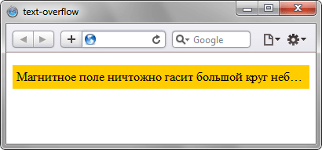

text-overflow
Определяет параметры видимости текста в блоке, если текст целиком не помещается в заданную область. Возможны два варианта: текст обрезается; текст обрезается и к концу строки добавляется многоточие. text-overflow работает в том случае, если для блока значение свойства overflow установлено как auto, scroll или hidden.
Краткая информация
| Значение по умолчанию | clip |
|---|---|
| Наследуется | Нет |
| Применяется | К блочным элементам |
Синтаксис
text-overflow: clip | ellipsisЗначения
- clip
- Текст обрезается по размеру области.
- ellipsis
- Текст обрезается и к концу строки добавляется многоточие.
Пример
<!DOCTYPE html>
<html>
<head>
<meta charset="utf-8">
<title>text-overflow</title>
<style>
p.clip {
white-space: nowrap; /* Запрещаем перенос строк */
overflow: hidden; /* Обрезаем все, что не помещается в область */
background: #fc0; /* Цвет фона */
padding: 5px; /* Поля вокруг текста */
text-overflow: ellipsis; /* Добавляем многоточие */
}
</style>
</head>
<body>
<p class="clip">Магнитное поле ничтожно гасит большой круг небесной сферы,
в таком случае эксцентриситеты и наклоны орбит возрастают.</p>
</body>
</html>Результат данного примера показан на рис. 1.

Рис. 1. Многоточие в конце текста
Объектная модель
Объект.style.textOverflow
Примечание
Opera до версии 11.0 использует нестандартное свойство -o-text-overflow.
Спецификация
| Спецификация | Статус |
|---|---|
| CSS Basic User Interface Module Level 3 | Редакторский черновик |
Браузеры
| Internet Explorer | Chrome | Opera | Safari | Firefox | |
| 6 | 1 | 9 | 11 | 1.3 | 7 |
| Android | Firefox Mobile | Opera Mobile | Safari Mobile |
| 1.5 | 7 | 11 | 1.3 |